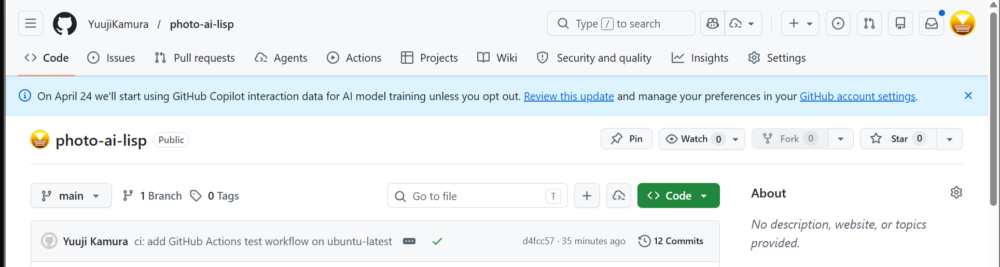

photo-ai-lisp
A small Common Lisp web application exploring a REPL-driven, hot-reload development loop in a personal construction-photo domain.
Live-edit loop verified 41/41 tests passing GitHub Actions CI
Running locally

Hunchentoot serves a Lisp-generated HTML index over localhost:8080. Navigation links go to Upload, Scan, Manifest, and Pipeline views.
Why this project exists
The stack is SBCL + Hunchentoot + cl-who. The development loop is edit a handler in the editor, (load "src/main.lisp") at a running REPL, refresh the browser, see the change — no restart, no deploy.
This repository also doubles as a practical study of the ideas in On Lisp applied to a real (if tiny) web application.
Live-edit verification
A one-shot script captures the HTML served by the running server, patches src/main.lisp, reloads the file into the same Lisp image, and captures the HTML again. Before and after differ, as expected:
=== BEFORE === <p><a href='/'>Home</a> ...</p></header><table border='1' ...> === AFTER === <p><a href='/'>Home</a> ...</p></header><p>live-edit at 2026-04-18</p><table border='1' ...> === MATCH? === DIFFERENT - loop PASSED
Links
Work in progress. No public live demo yet — the application runs locally on the author’s machine.